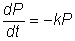
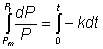
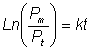
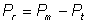
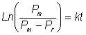

Enzyme Technology
Cell breakage
Various intracellular enzymes are used
in significant quantities and must be released from cells and purified (Table
2.1). The amount of energy that must be put into the breakage of cells depends
very much on the type of organism and to some extent on the physiology of the
organism. Some types of cell are broken readily by gentle treatment such as
osmotic shock (e.g., animal cells and some gram-negative bacteria such as
Azotobacter species), while others are highly resistant to
breakage. These include yeasts, green algae, fungal mycelia and some
gram-positive bacteria which have cell wall and membrane structures capable of
resisting internal osmotic pressures of around 20 atmospheres (2 MPa) and
therefore have the strength, weight for weight, of reinforced concrete.
Consequently a variety of cell disruption techniques have been developed
involving solid or liquid shear or cell lysis.
The rate of protein released by
mechanical cell disruption is usually found to be proportional to the amount of
releasable protein.

(2.5)
where P represents the protein content remaining associated with
the cells, t is the time and k is a release constant dependent on the system.
Integrating from P = Pm (maximum possible protein releasable) at time
zero to P = Pt at time t gives

(2.6)

(2.7)
As the
protein released from the cells (Pr) is given by

(2.8)
the following equation for cell
breakage is obtained

(2.9)
It is most important in choosing cell
disruption strategies to avoid damaging the enzymes. The particular hazards to
enzyme activity relevant to cell breakage are summarised in Table
2.3. The most
significant of these, in general, are heating and shear.
Table 2.3.
Hazards likely to damage enzymes during cell disruption.
|
Heat
|
All
mechanical methods require a large input of energy, generating heat. Cooling is
essential for most enzymes. The presence of substrates, substrate analogues or
polyols may also help stabilise the enzyme.
|
|
Shear
|
Shear forces are needed to
disrupt cells and may damage enzymes, particularly in the presence of heavy
metal ions and/or an air interface.]
|
|
Proteases
|
Disruption of cells will
inevitably release degradative enzymes which may cause serious loss of enzyme
activity. Such action may be minimised by increased speed of processing with as
much cooling as possible. This may be improved by the presence of an excess of
alternative substrates (e.g., inexpensive protein) or inhibitors in the extraction
medium.
|
|
pH
|
Buffered solutions may be necessary. The presence of substrates,
substrate analogues or polyols may also help stabilise the enzyme.
|
|
Chemical
|
Some enzymes may suffer conformational changes in the
presence of detergent and/or solvents. Polyphenolics derived from plants are
potent inhibitors of enzymes. This problem may be overcome by the use of
adsorbents, such as polyvinylpyrrolidone, and by the use of ascorbic acid to
reduce polyphenol oxidase action.
|
|
Oxidation
|
Reducing agents (e.g., ascorbic
acid, mercaptoethanol and dithiothreitol) may be necessary.
|
|
Foaming
|
The
gas-liquid phase interfaces present in foams may disrupt enzyme conformation.
|
Heavy-metal toxicity
|
Heavy metal ions (e.g., iron, copper and nickel) may be
introduced by leaching from the homogenisation apparatus. Enzymes
may be protected from irreversible inactivation by the use of chelating reagents,
such as EDTA.
|
Media for enzyme extraction will be selected on the basis of
cost-effectiveness so will include as few components as possible. Media will
usually be buffered at a pH value which has been determined to give the maximum
stability of the enzyme to be extracted. Other components will combat other
hazards to the enzyme, primarily factors causing denaturation (Table
2.3).
Home
| Back | Next
This page was established in 2004 and last updated by Martin
Chaplin
on
6 August, 2014
|